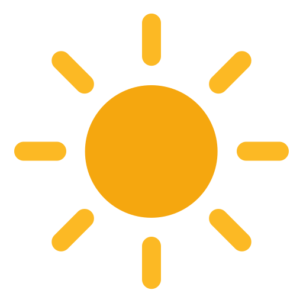
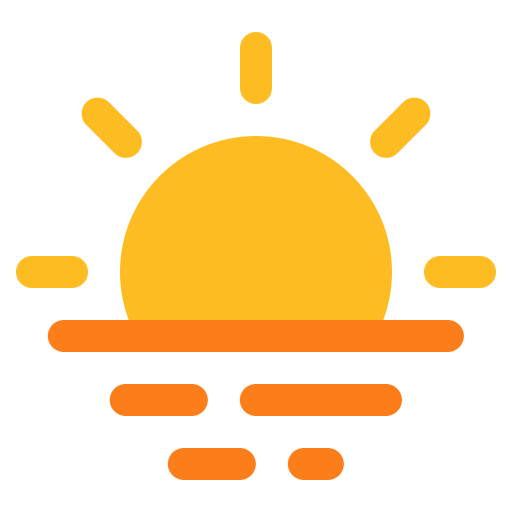
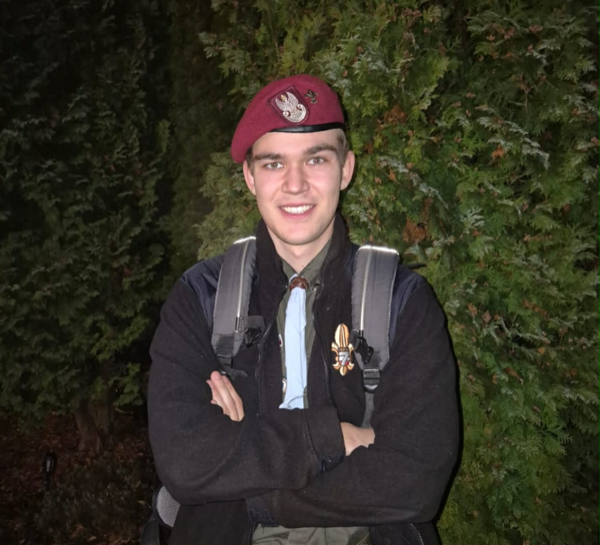
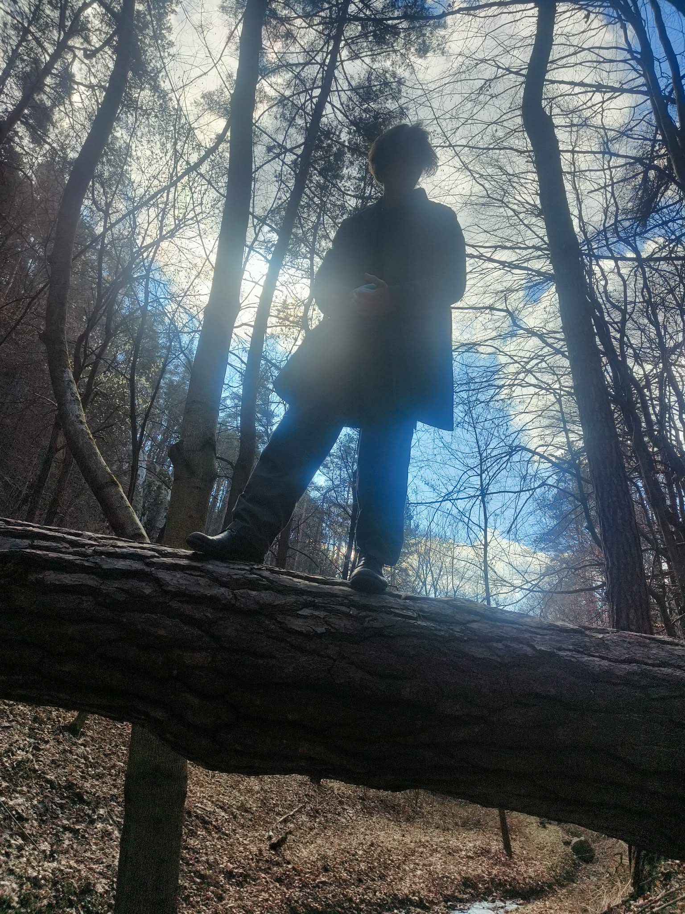
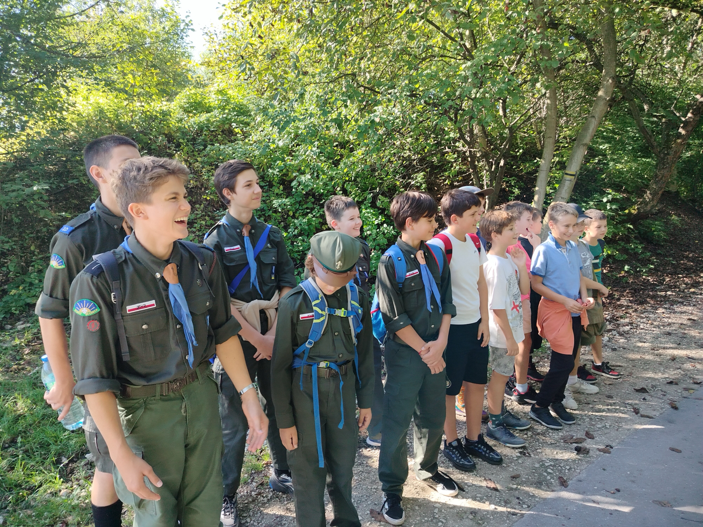
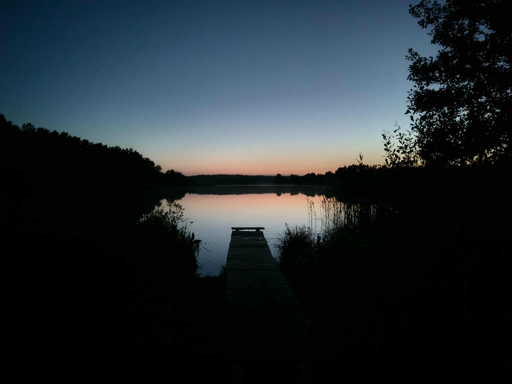
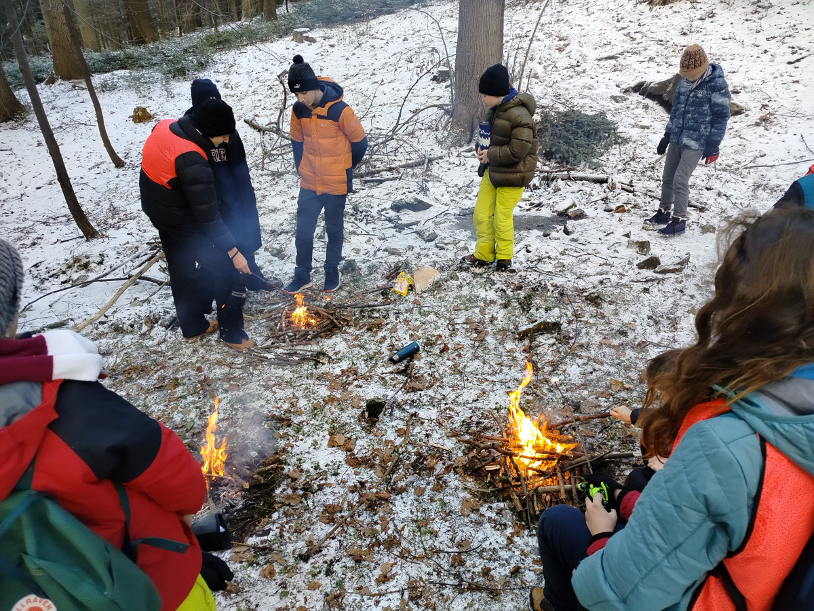

Dzieci Słońca to nie tylko nazwa – to styl życia, optymizm i ciągły rozwój pełny przygód.
W naszej drużynie kształtujemy postawy odpowiedzialności, współpracy i wzajemnego szacunku. Uczymy zaradności, samodzielności oraz gotowości do podejmowania wyzwań i niesienia pomocy innym. Przekazujemy wartości harcerskie, które pomagają rozwijać charakter i budować silne relacje.
Przygoda w naszej drużynie to odkrywanie nowych wyzwań i rozwijanie umiejętności poprzez działanie. Poznajemy różnorodne techniki harcerskie, uczymy się praktycznych rzeczy i zdobywamy sprawności, które motywują do dalszego rozwoju. Każda zbiórka i wyjazd to okazja do przeżycia czegoś nowego i niezapomnianego.
Braterstwo w naszej drużynie to budowanie silnych więzi opartych na zaufaniu i wzajemnym wsparciu. Tworzymy miejsce, w którym każdy czuje się ważny i może liczyć na innych. Razem przeżywamy sukcesy, pokonujemy trudności i uczymy się bycia częścią zespołu.
Zastępowy: wyw. Ignacy Simlat
Zbiórki: Piątki, 18:00
Miejsce: SP 34, Kraków

Zastępowy: wyw. Jan Palonek
Zbiórki: Czwartki, 17:00
Miejsce: SP 34, Kraków

Zastępowy: wyw. Wojtek Chmielewski
Zbiórki: Czwartki, 18:00
Miejsce: SP 34, Kraków

Drużynowy
Przyboczny

Przyboczny

Śródrocze to czas regularnej pracy i rozwoju, podczas którego systematycznie zdobywamy nowe umiejętności oraz realizujemy cele drużyny na comiesięcznych zbiórkach i wyjazdach.
Zobacz zdjecia
Obóz harcerski to kulminacja całorocznej pracy – pełen przygód czas spędzony w naturze, podczas którego sprawdzamy swoje umiejętności i przeżywamy niezapomniane chwile razem.
Zobacz zdjęcia
To czas zimowych przygód, kiedy uczestniczymy w grach terenowych, uczymy się nowych umiejętności i spędzamy aktywnie czas na świeżym powietrzu. Wspólnie odkrywamy okolice i podejmujemy nowe wyzwania.
Zobacz zdjeciaMasz pytania? Chcesz dołączyć? Napisz lub zadzwoń!
dominik.wojcik@zhr.pl
Tel: +48 570 834 914